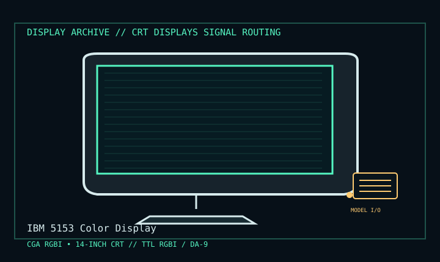

[ INDIVIDUAL COMPONENT // DISPLAY ARCHIVE ]
IBM 5153 Color Display
IBM CGA monitor for the original PC generation (1983 onward).

IDENTIFICATION: Match the exact model suffix, region and installed option boards to the cited manual and rear label. Do not infer electrical compatibility from connector shape.
Model-specific specifications
| Catalog class | Crt Displays |
|---|---|
| Exact product | IBM 5153 Color Display |
| Era / purpose | IBM CGA monitor for the original PC generation (1983 onward). |
| Tube / image | 14-inch color CRT; analog pixel resolution depends on CGA mode, not a fixed panel matrix. |
| Supported CGA modes | 320 × 200 and 640 × 200 graphics; 40- and 80-column text from the CGA adapter. |
| Input / timing | 9-pin DA-9 TTL RGBI digital input; 15.75 kHz horizontal and 50/60 Hz vertical per source/video mode. |
| Power / mechanics | About 65 W; regional 115/120 V and 220/240 V supply variants exist, so the rear nameplate takes precedence. Desktop CRT cabinet with captive video lead. |
Revision, timing & host compatibility
5153 is CGA RGBI, not EGA analog or VGA. Check adapter pinout, TTL signal levels, sync polarity, and mains variant against this particular set; a DA-9 connector is not proof of compatible wiring. RGBI has a separate intensity bit and the monitor can render the CGA brown-color circuit differently across revisions.
Before operation, compare source signal type, scan/frame timing, pinout, interface bandwidth, input-board configuration and mains/DC rating against the model-specific manual and nameplate. A listed maximum mode is not a promise of optimum image quality.
Vintage preservation & repair notes
Photograph rear voltage and model labels, test both text and graphics modes, and record color/brightness/geometry. Preserve original CGA cable and control positions. Tube and power supply hold dangerous voltage; use a qualified CRT technician and the cited service reference.
Record serial/date code, configuration, all installed interface boards, accessories, image condition, calibration state, test source and document edition. Disconnect power before external cleaning and use only the manufacturer-approved procedure; do not open CRT/LCD/OLED equipment without qualified service practice.
Manufacturer manuals & specifications
- IBM 5153 Color Display Service Manual (Sams scan)Primary-era service reference for the named IBM display, CRT circuitry and adjustments.
- IBM 5153 documentation and signal notesModel-specific archival index with CGA connector and variant cautions.